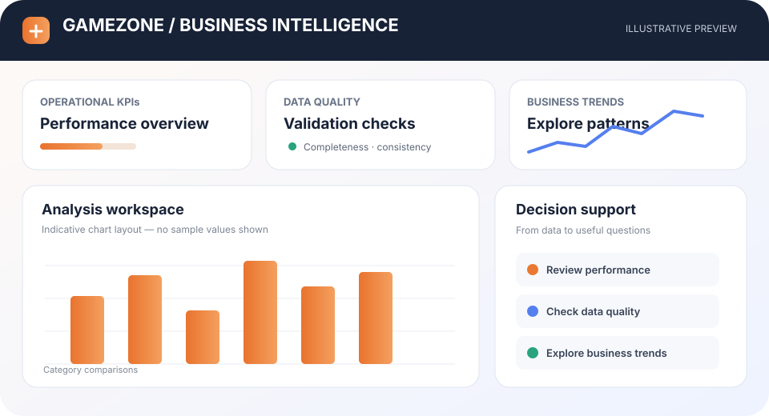

Portfolio screenshot
Portfolio screenshotSales Data Analysis
Used SQL to answer four focused sales questions: top products by size, leading salesperson by region, top five regions, and high-value first-quarter transactions.
View repository ↗Explore the question, visual evidence and repository behind each example. Portfolio illustrations are labelled separately from screenshots.
Portfolio screenshotUsed SQL to answer four focused sales questions: top products by size, leading salesperson by region, top five regions, and high-value first-quarter transactions.
View repository ↗ Portfolio screenshot
Portfolio screenshotPower BI workforce analysis covering employee performance, turnover, tenure and workforce trends, organized for HR review and data-informed decisions.
View repository ↗Interactive Power BI reporting concept bringing sales performance, financial indicators, customer behavior and operational KPIs into a single review experience.
View repository ↗ Portfolio screenshot
Portfolio screenshotCombines Power BI, SQL, DAX and Python to review sales performance, monthly profit trends, shipment efficiency and planning-related KPIs.
View repository ↗ Portfolio screenshot
Portfolio screenshotSQL-based financial analysis covering loan interest rates, grades, default patterns, annual issuance, repayment behavior and state-level risk trends.
View repository ↗
Illustrative previewPostgreSQL/Python BI project analyzing order, customer, product and geographic trends. The repository documents validation workflows across a 42,330-record demo dataset.
View repository ↗ Illustrative workflow preview
Illustrative workflow previewPython workflow for inspecting workbook sheets, exporting sheet-level CSVs, checking missing values, summarizing numeric fields and generating exploratory charts.
View repository ↗ Illustrative architecture
Illustrative architectureAirflow/Astro ETL workflow organized into Bronze, Silver and Gold layers with automated data-quality checks, modular processing and documented orchestration patterns.
View repository ↗RAG application prototype using FastAPI and FAISS-based retrieval with containerization patterns. Review the repository for implementation details and current limitations.
View repository ↗Portfolio transparency: These are personal projects and prototypes, not claims of paid client engagements. Review each repository README for exact features, setup and implementation details.
Share the business question and what a useful deliverable would look like.
Discuss a project ↗